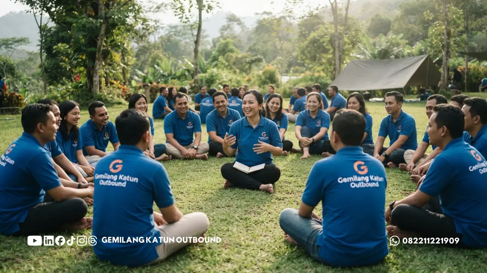

Daftar Isi
- Apa Perbedaan Instruktur dan Fasilitator Outbound?
- Apa Saja Tugas Instruktur Outbound di Lapangan?
- Apa Saja Tugas Fasilitator Outbound?
- Sertifikasi dan Pengalaman Apa yang Perlu Dicek dari Instruktur?
- Berapa Rasio Instruktur Terhadap Peserta yang Wajar?
- Bagaimana Cara Memverifikasi Tim Lapangan Sebelum Memesan?
- Apa Tanda Peringatan pada Tim Lapangan Provider?
- Apa yang Perlu Ditanyakan kepada Provider Tentang Tim Lapangan?
- Langkah Praktis Panitia dalam Memilih Tim Lapangan
- Pertanyaan Umum (FAQ)
Instruktur outbound berfokus menjaga keselamatan teknis dan peralatan, sedangkan fasilitator mendedikasikan perhatian pada pencapaian tujuan pembelajaran serta dinamika interaksi peserta kelompok sepanjang simulasi berlangsung.
Satu personel memang dimungkinkan merangkap dua tanggung jawab pada aktivitas rekreasi santai. Namun pada simulasi berisiko tinggi, fungsi pengawasan teknis wajib dipisahkan agar fokus keselamatan tidak terpecah oleh agenda lain.
Keseimbangan rasio antara jumlah instruktur dan total peserta rombongan sangat dipengaruhi oleh tingkat bahaya wahana yang dimainkan. Mengetahui perbedaan peran ini akan memandu Anda menentukan mitra pelaksana terbaik.
Apa Perbedaan Instruktur dan Fasilitator Outbound?
Instruktur outbound bertanggung jawab atas aspek keamanan fisik, instalasi wahana, dan kelayakan alat, sementara fasilitator outbound bertugas memandu jalannya permainan, menstimulasi diskusi tim, serta memimpin proses refleksi pascakegiatan.
Perbedaan esensial ini kerap disalahpahami oleh sebagian besar panitia pemesan. Kekeliruan ini membuat penyelenggara hanya menanyakan jam terbang pemandu tanpa memastikan siapa yang bertindak menjaga perlindungan teknis di arena tantangan.
Instruktur menguasai teknik pemasangan pengaman, penilaian struktur tanah, pengamatan faktor cuaca mendadak, serta aksi penyelamatan cepat. Di sisi lain, fasilitator mahir merajut pengalaman bermain menjadi pembelajaran kerja sama tim dan kepemimpinan.
Bagi agenda yang berorientasi pada pengembangan sumber daya manusia (SDM), kolaborasi keduanya mutlak diperlukan. Sementara bagi agenda rekreasi murni, tugas instruktur keselamatan tetap wajib hadir secara penuh di setiap titik kegiatan.
Apa Saja Tugas Instruktur Outbound di Lapangan?
Tugas instruktur outbound mencakup pemeriksaan arena dan perangkat pendukung, pemasangan tali pengaman tubuh, pemberian pengarahan teknis keselamatan, pengawasan intensif sepanjang aktivitas, serta penanganan tanggap darurat saat terjadi insiden.
Sebelum rombongan tiba di lokasi, instruktur telah memeriksa stabilitas struktur instalasi wahana, kebersihan permukaan tanah, serta perkembangan kondisi cuaca hulu. Analisis awal ini menentukan apakah agenda aman dilanjutkan atau wajib dialihkan.
Sepanjang simulasi bergerak, instruktur senantiasa menempati titik pengamatan terdekat. Pada tantangan ketinggian tali, mereka memastikan carabiner terkunci rapat, sementara pada aktivitas air, instruktur memastikan pelampung terpasang kokoh.
Instruktur juga memegang mandat mutlak menghentikan simulasi apabila ada peserta yang melanggar instruksi atau saat kondisi alam memburuk. Ketetapan ini wajib dipahami panitia agar tidak dipandang sebagai hambatan kelancaran acara.
Apa Saja Tugas Fasilitator Outbound?
Tugas utama fasilitator outbound meliputi penyusunan rancangan aktivitas sesuai target acara, pengawalan dinamika kelompok, pemanduan sesi refleksi (debriefing), serta membantu peserta memetik pesan moral yang aplikatif bagi pekerjaan.
Fasilitator andal selalu mengawali program dengan menggali kebutuhan panitia. Mereka mengidentifikasi kendala komunikasi internal korporat, tantangan sinergi departemen, lalu memformulasikan skenario permainan yang relevan dengan kebutuhan tersebut.
Usai setiap permainan tuntas, fasilitator mengajak rombongan berkumpul untuk merefleksikan proses yang baru dilalui. Peserta diajak menuturkan hambatan emosional dan strategi tim sehingga aktivitas tidak berakhir sebagai hiburan kosong tanpa makna.
Dari dimensi kenyamanan, fasilitator menjaga ruang aman psikologis (psychological safety) bagi peserta. Mereka mencegah perundungan antarteman dan menyiapkan peran alternatif bagi anggota yang memiliki keterbatasan gerak tubuh.
Sertifikasi dan Pengalaman Apa yang Perlu Dicek dari Instruktur?
Panitia perlu memverifikasi dokumen lisensi teknis sesuai jenis wahana, riwayat sertifikasi pertolongan pertama (First Aid/CPR), rekam jejak memandu rombongan sejenis, serta kejelasan status kemitraan personel pada manajemen provider.

Kualifikasi teknis berbeda menurut karakter wahana. Instruktur modul ketinggian wajib menguasai sistem tali karmantel (rigging), sedangkan pemandu arung jeram wajib mengantongi lisensi pemanduan arus deras dan teknik penyelamatan perairan.
Keterampilan pertolongan pertama merupakan syarat mutlak. Tanyakan kapan pelatihan medis terakhir kali diikuti dan apakah ada pembaharuan berkala, karena penanganan menit-menit awal insiden sangat menentukan keselamatan rujukan medis.
Pengalaman kerja tidak sekadar diukur dari tahun berkarier, melainkan dari skala kelompok yang pernah dikawal. Instruktur yang terbiasa mendampingi tim kecil belum tentu terlatih mengendalikan psikologis rombongan korporat ratusan orang.
Pastikan pula bahwa personel yang diajukan dalam proposal awal adalah figur yang benar-benar bertugas di lapangan. Praktik menawarkan profil konsultan senior saat presentasi namun menurunkan staf lepas amatir saat kegiatan wajib diantisipasi.
Berapa Rasio Instruktur Terhadap Peserta yang Wajar?
Rasio pengawasan ideal antara instruktur dan peserta ditentukan oleh bobot risiko aktivitas fisik. Semakin berbahaya medan permainan alam, semakin sedikit jumlah peserta yang boleh diawasi oleh satu orang instruktur teknis.
Tidak ada angka mutlak yang cocok untuk segala agenda, sehingga panitia berhak menanyakan rasionalitas rasio yang diajukan provider. Permainan kekompakan di lapangan rumput datar tentu mengizinkan rentang rasio peserta lebih luas.
Sebaliknya, pada tantangan high ropes atau arung jeram, perbandingan personel pendamping harus diperketat, umumnya satu instruktur mendampingi 5 hingga 7 peserta guna menjamin pengawasan keselamatan berlangsung tanpa jeda.
Karakteristik peserta juga menjadi pertimbangan penting. Rombongan usia anak sekolah, peserta lanjut usia, atau tim yang belum pernah beraktivitas di alam bebas membutuhkan pengawasan lebih rapat dibanding rombongan pecinta alam berpengalaman.
Waspadai penawaran harga yang sama sekali tidak merinci alokasi jumlah staf pengawas di lapangan. Ketiadaan rincian ini sering menjadi celah pengurangan pemandu demi memangkas biaya pokok penyelenggara.
Bagaimana Cara Memverifikasi Tim Lapangan Sebelum Memesan?
Verifikasi kredibilitas dapat dijalankan dengan meminta portofolio nama pemandu, salinan lisensi kompetensi, kontak referensi klien korporat sebelumnya, serta kesempatan berdiskusi langsung bersama penanggung jawab operasional lapangan.
Langkah pertama adalah meminta data riwayat hidup tertulis yang memuat rekam jejak sertifikasi tim. Langkah kedua adalah menghubungi narahubung klien yang pernah bekerja sama untuk mendengar testimoni kedisiplinan kerja tim di lapangan.
Langkah ketiga adalah mengajukan pertanyaan studi kasus situasional kepada kepala regu operasional. Tanyakan bagaimana tindakan mereka saat peserta panik di atas papan luncur atau menghadapi penolakan aktivitas dari peserta tertentu.
Jawaban konkret dan runtut menandakan pengalaman matang tim di lapangan. Jika memungkinkan, tinjau dokumentasi foto atau video terbaru guna memastikan peralatan pengaman terpasang rapi sesuai kaidah keselamatan modern.
Pembahasan menyeluruh seputar standar teknis wahana dan perlengkapan pendukung dapat dipelajari lebih lanjut melalui panduan standar keselamatan kegiatan outbound dan rafting.
Apa Tanda Peringatan pada Tim Lapangan Provider?
Sinyal peringatan tim lapangan yang wajib diwaspadai mencakup keengganan menyebut identitas personel pemandu, ketiadaan deskripsi kerja terstruktur, pengabaian pertanyaan teknis keselamatan, serta kecenderungan meremehkan risiko alam.
Tanda bahaya awal adalah respons yang mengambang saat dimintai daftar nama petugas resmi. Provider yang tidak berani menjamin figur penanggung jawab keselamatan akan sangat sulit dimintai pertanggungjawaban hukum bila timbul masalah.
Sinyal bahaya berikutnya adalah jargon "tenang saja, sudah biasa" tanpa penjelasan SOP evakuasi nyata. Budaya keselamatan yang baik dibuktikan melalui pemaparan prosedur logis, bukan sekadar bujukan kata-kata penenang panitia.
Perhatikan pula transparansi provider dalam mengomunikasikan opsi cadangan bila cuaca mendadak memburuk. Penyelenggara yang menolak menyepakati skenario darurat secara tertulis sebaiknya tidak dipilih demi keselamatan rombongan.
Apa yang Perlu Ditanyakan kepada Provider Tentang Tim Lapangan?
Panitia perlu memastikan siapa koordinator keselamatan utama, kejelasan pemisahan tugas dengan fasilitator, keabsahan lisensi P3K, kebijakan penggantian personel darurat, serta kecakapan tim menangani rombongan berkarakteristik khusus.
Berikut daftar pertanyaan taktis yang dianjurkan dibawa panitia saat berdiskusi bersama tim penyedia jasa outbound:
- Siapa personel yang ditunjuk memegang komando keselamatan mutlak selama agenda berlangsung?
- Apakah tim instruktur keselamatan teknis dan fasilitator dinamika kelompok dipegang oleh figur terpisah?
- Pelatihan pertolongan pertama (First Aid) apa yang telah diselesaikan oleh staf pendamping lapangan?
- Bagaimana mekanisme penggantian cepat dari provider apabila instruktur utama mendadak berhalangan hadir?
- Apakah tim pemandu pernah mengawal rombongan dengan rentang usia dan skala jumlah peserta yang serupa?
Catat setiap tanggapan secara saksama dan sinkronkan dengan lampiran proposal resmi. Keselarasan antara komitmen verbal dan dokumen tertulis menjadi tolok ukur profesionalitas yang paling dapat diandalkan.
Langkah Praktis Panitia dalam Memilih Tim Lapangan
Instruktur outbound berperan melindungi keselamatan raga peserta, sedangkan fasilitator bertugas memperkaya wawasan mental tim. Kedua elemen penting ini wajib dievaluasi secara seimbang sesuai porsi perannya masing-masing.
Panitia yang memahami batasan peran ini mampu melayangkan pertanyaan seleksi secara akurat dan menyaring vendor secara objektif melalui beberapa langkah taktis berikut:
- Minta manifes tertulis yang merinci nama seluruh kru lapangan beserta penugasan spesifiknya.
- Periksa salinan lisensi teknis instruktur serta sertifikat penyegaran keahlian medis darurat.
- Kalkulasikan kewajaran rasio pendampingan terhadap skala kerumunan rombongan Anda.
- Lakukan pengecekan silang terhadap rekam jejak kepuasan klien instansi yang pernah ditangani.
- Tegaskan komitmen tertulis bahwa tim yang dipresentasikan adalah pihak yang hadir bertugas di lapangan.
Menetapkan standar tim lapangan sejak awal merupakan langkah bijak demi kelancaran program kebersamaan yang aman, sarat pembelajaran bermakna, serta berkesan positif bagi seluruh anggota rombongan kerja Anda.
PERTANYAAN UMUM (FAQ)
Ingin Outbound Training Berkualitas dengan Tim Fasilitator & Instruktur Berlisensi di Malang?
Hubungi Gemilang Katun via WhatsApp 0822-1122-1909